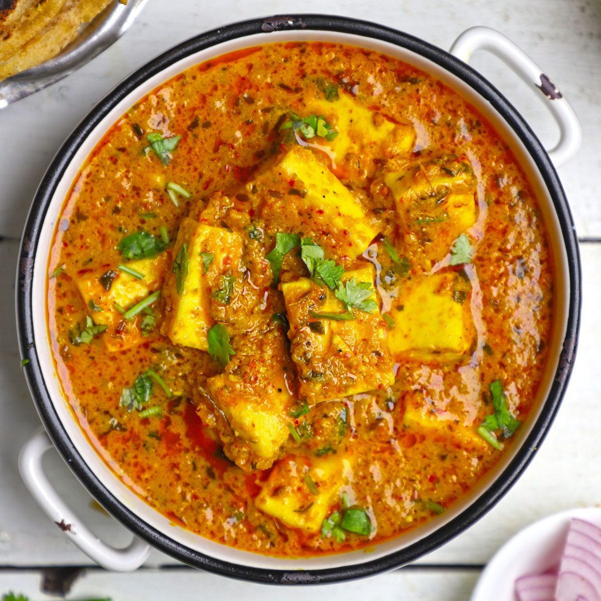

Paneer Masala

Description
Paneer Masala is a popular North Indian dish with high nutritional value and great taste. It has a rich history with many theories pertaining to its origin. It was soon made famous and adapted as a staple diet by the North Indians due to its inherent taste and gravy making style. It is the vegetarian counterpart of Chicken masala gravy made with tomato puree, spices, and other ingredients along with paneer chunks. The aroma of the Paneer Masala gravy and the softness of the paneer makes it an irresistible combination, yet a simple and perfect dish to lift your mood.
Ingredients
- Cashewnut (2 Piece Split): 2 units
- Watermelon Seeds: 0.5 teaspoons
- Refined Oil: 1 teaspoon
- Cumin: 1 pinch
- Red Chilli Powder: 1 pinch
- Turmeric Powder: 1 pinch
- Coriander Powder: 1 pinch
- Salt: 0.5 teaspoons
- Ginger: 1 small piece
- Onion: 0.25 cups
- Tomato: 0.25 cups
- Tomato Puree: 2 teaspoons
- Paneer: 1 cup
- Garlic: 1 piece
- Green Chillies: 0.5 unit
- Jeera Powder: 1 pinch
- Coriander Leaves: 4 leafs
Steps
- Wash and soak Cashew Nuts and Melon Seeds.
- Boil soaked Cashew Nuts and Melon Seeds.
- In a blender, add boiled Cashew Nuts and Melon Seeds. Make a smooth paste. Keep it aside.
- Add Oil and Jeera Seeds. Allow to crackle.
- Add chopped Ginger, Garlic and Green Chilli. Saute.
- Add chopped Onion and fry till Golden Brown.
- Add Chilli Powder, Turmeric Powder, Coriander Powder, and Jeera Powder.
- Add chopped Red Tomatoes and cook till mushy.
- Add Salt, Paneer Cubes, Tomato Paste and Cashew Magaz Paste. Cook for sometime.
- Serve in a bowl. Garnish with chopped Coriander.